[toc]
1. 环境变量
简单理解了变量的概念，就很容易理解环境变量了。环境变量的作用域比自定义变量的要大，如 Shell 的环境变量作用于自身和它的子进程。在所有的 UNIX 和类 UNIX 系统中，每个进程都有其各自的环境变量设置，且默认情况下，当一个进程被创建时，除了创建过程中明确指定的话，它将继承其父进程的绝大部分环境设置。Shell 程序也作为一个进程运行在操作系统之上，而我们在 Shell 中运行的大部分命令都将以 Shell 的子进程的方式运行。
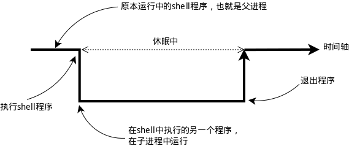
通常我们会涉及到的变量类型有三种：
- 当前 Shell 进程私有用户自定义变量，如上面我们创建的 tmp 变量，只在当前 Shell 中有效。
- Shell 本身内建的变量。
- 从自定义变量导出的环境变量。
也有三个与上述三种环境变量相关的命令：set，env，export。这三个命令很相似，都是用于打印环境变量信息，区别在于涉及的变量范围不同。详见下表：
| 命 令 | 说 明 |
|---|---|
set | 显示当前 Shell 所有变量，包括其内建环境变量（与 Shell 外观等相关），用户自定义变量及导出的环境变量。 |
env | 显示与当前用户相关的环境变量，还可以让命令在指定环境中运行。 |
export | 显示从 Shell 中导出成环境变量的变量，也能通过它将自定义变量导出为环境变量。 |
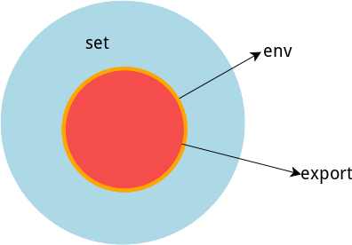
你可以更直观的使用 vimdiff 工具比较一下它们之间的差别：
temp=shiyanlou
export temp_env=shiyanlou
env|sort>env.txt
export|sort>export.txt
set|sort>set.txt上述操作将命令输出通过管道 | 使用 sort 命令排序，再重定向到对象文本文件中。管道的概念后面我们会学到，现在你知道这是什么意思就行了。
vimdiff env.txt export.txt set.txt使用 vimdiff 工具比较导出的几个文件的内容，退出 vimdiff 需要按下 Esc 后输入 :q 即可退出。
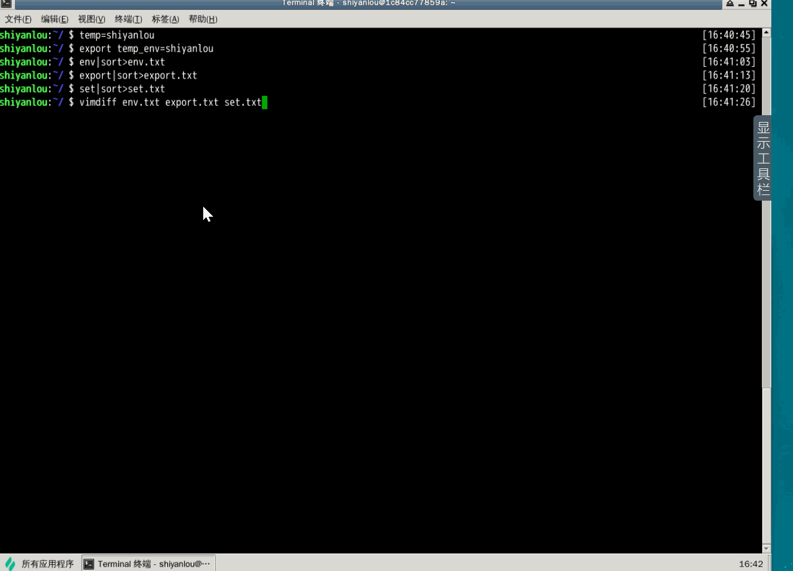
)关于哪些变量是环境变量，可以简单地理解成在当前进程的子进程有效则为环境变量，否则不是（有些人也将所有变量统称为环境变量，只是以全局环境变量和局部环境变量进行区分，我们只要理解它们的实质区别即可）。我们这里用 export 命令来体会一下，先在 Shell 中设置一个变量 temp=shiyanlou，然后再新创建一个子 Shell 查看 temp 变量的值：

注意：为了与普通变量区分，通常我们习惯将环境变量名设为大写。
永久生效
但是问题来了，当你关机后，或者关闭当前的 shell 之后，环境变量就没了啊。怎么才能让环境变量永久生效呢？
按变量的生存周期来划分，Linux 变量可分为两类：
- 永久的：需要修改配置文件，变量永久生效；
- 临时的：使用 export 命令行声明即可，变量在关闭 shell 时失效。
这里介绍两个重要文件 /etc/bashrc（有的 Linux 没有这个文件） 和 /etc/[[【Github】profile|profile]] ，它们分别存放的是 shell 变量和环境变量。还有要注意区别的是每个用户目录下的一个隐藏文件：
# .profile 可以用 ls -a 查看
cd /home/shiyanlou
ls -a
这个 .profile 只对当前用户永久生效。因为它保存在当前用户的 Home 目录下，当切换用户时，工作目录可能一并被切换到对应的目录中，这个文件就无法生效。而写在 /etc/profile 里面的是对所有用户永久生效，所以如果想要添加一个永久生效的环境变量，只需要打开 /etc/profile，在最后加上你想添加的环境变量就好啦。
1. 命令的查找路径与顺序
查看 PATH 环境变量的内容：
echo $PATH默认情况下你会看到如下输出：
/usr/local/sbin:/usr/local/bin:/usr/sbin:/usr/bin:/sbin:/bin:/usr/games:/usr/local/games如果你还记得 Linux 目录结构那一节的内容，你就应该知道上面这些目录下放的是哪一类文件了。通常这一类目录下放的都是可执行文件，当我们在 Shell 中执行一个命令时，系统就会按照 PATH 中设定的路径按照顺序依次到目录中去查找，如果存在同名的命令，则执行先找到的那个。
2 添加自定义路径到 PATH 环境变量
在前面我们应该注意到 PATH 里面的路径是以 : 作为分割符的，所以我们可以这样添加自定义路径：
PATH=$PATH:/home/shiyanlou/mybin注意这里一定要使用绝对路径。
3 修改和删除已有变量
变量修改
变量的修改有以下几种方式：
| 变量设置方式 | 说明 |
|---|---|
${变量名#匹配字串} | 从头向后开始匹配，删除符合匹配字串的最短数据 |
${变量名##匹配字串} | 从头向后开始匹配，删除符合匹配字串的最长数据 |
${变量名%匹配字串} | 从尾向前开始匹配，删除符合匹配字串的最短数据 |
${变量名%%匹配字串} | 从尾向前开始匹配，删除符合匹配字串的最长数据 |
${变量名/旧的字串/新的字串} | 将符合旧字串的第一个字串替换为新的字串 |
${变量名//旧的字串/新的字串} | 将符合旧字串的全部字串替换为新的字串 |
比如我们可以修改前面添加到 PATH 的环境变量，将添加的 mybin 目录从环境变量里删除。为了避免操作失误导致命令找不到，我们先将 PATH 赋值给一个新的自定义变量 mypath：
mypath=$PATH
echo $mypath
mypath=${mypath%/home/shiyanlou/mybin}
# 或使用通配符 * 表示任意多个任意字符
mypath=${mypath%*/mybin}可以看到路径已经不存在了。
变量删除
可以使用 unset 命令删除一个环境变量：
unset mypath4 让环境变量立即生效
前面我们在 Shell 中修改了一个配置脚本文件之后（比如 zsh 的配置文件 home 目录下的 .zshrc），每次都要退出终端重新打开甚至重启主机之后其才能生效，很是麻烦，我们可以使用 source 命令来让其立即生效，如：
cd /home/shiyanlou
source .zshrcsource 命令还有一个别名就是 .，上面的命令如果替换成 . 的方式就该是：
. ./.zshrc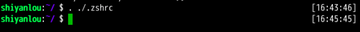
在使用 . 的时候，需要注意与表示当前路径的那个点区分开。
注意第一个点后面有一个空格，而且后面的文件必须指定完整的绝对或相对路径名，source 则不需要。
2 搜索文件
与搜索相关的命令常用的有 whereis，which，find 和 locate。
whereis简单快速
whereis who
whereis find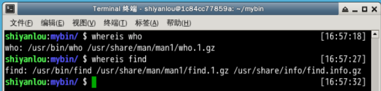
你会看到 whereis find 找到了三个路径，两个可执行文件路径和一个 man 在线帮助文件所在路径，这个搜索很快，因为它并没有从硬盘中依次查找，而是直接从数据库中查询。
whereis 只能搜索二进制文件（-b），man 帮助文件（-m）和源代码文件（-s）。如果想要获得更全面的搜索结果可以使用 locate 命令。
locate快而全
使用 locate 命令查找文件也不会遍历硬盘，它通过查询 /var/lib/mlocate/mlocate.db 数据库来检索信息。不过这个数据库也不是实时更新的，系统会使用定时任务每天自动执行 updatedb 命令来更新数据库。所以有时候你刚添加的文件，它可能会找不到，需要手动执行一次 updatedb 命令（在我们的环境中必须先执行一次该命令）。注意这个命令也不是内置的命令，在部分环境中需要手动安装，然后执行更新。
sudo apt-get update
sudo apt-get install locate
sudo updatedb它可以用来查找指定目录下的不同文件类型，如查找 /etc 下所有以 sh 开头的文件：
locate /etc/sh注意，它不只是在 /etc 目录下查找，还会自动递归子目录进行查找。
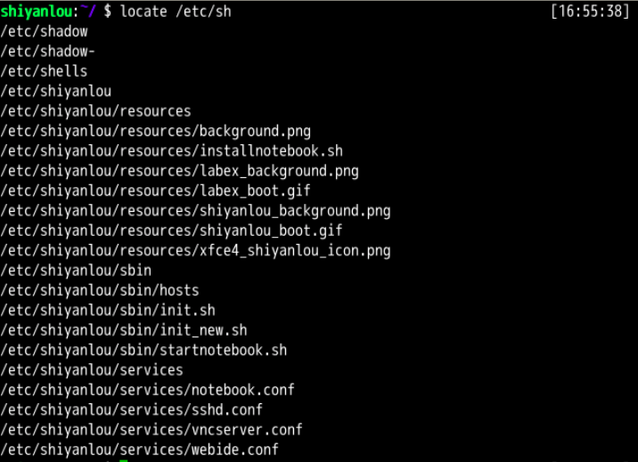
查找 /usr/share/ 下所有 jpg 文件：
locate /usr/share/*.jpg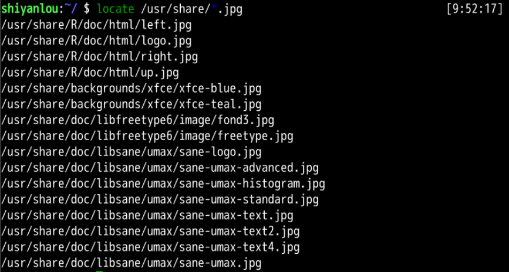
环境里使用 zsh，在
~/.zshrc文件里添加了setopt nonomatch配置，这样就不会自动处理和修复命令，因此可以不使用\转义。如果其他环境中执行该命令提示zsh: no matches found: /usr/share/*.jpg，则可以在.zshrc中添加上述配置，或者使用\转义。
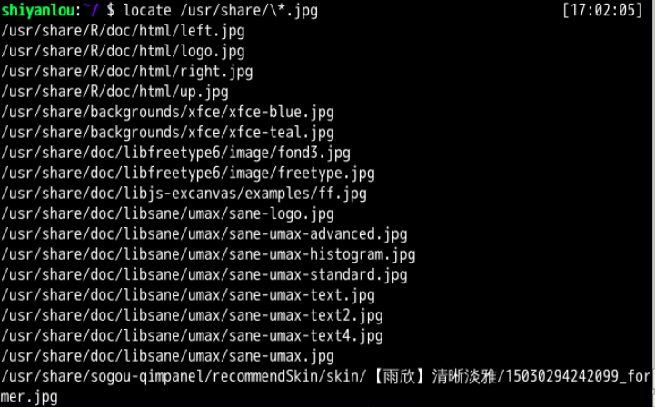
如果想只统计数目可以加上 -c 参数，-i 参数可以忽略大小写进行查找，whereis 的 -b、-m、-s 同样可以使用。
which小而精
which 本身是 Shell 内建的一个命令，我们通常使用 which 来确定是否安装了某个指定的程序，因为它只从 PATH 环境变量指定的路径中去搜索命令并且返回第一个搜索到的结果。也就是说，我们可以看到某个系统命令是否存在以及执行的到底是哪一个地方的命令。
which man
which nginx
which pingfind精而细
find 应该是这几个命令中最强大的了，它不但可以通过文件类型、文件名进行查找而且可以根据文件的属性（如文件的时间戳，文件的权限等）进行搜索。find 命令强大到，要把它讲明白至少需要单独好几节课程才行，我们这里只介绍一些常用的内容。
这条命令表示去 /etc/ 目录下面 ，搜索名字叫做 interfaces 的文件或者目录。这是 find 命令最常见的格式，千万记住 find 的第一个参数是要搜索的地方。命令前面加上 sudo 是因为 shiyanlou 只是普通用户，对 /etc 目录下的很多文件都没有访问的权限，如果是 root 用户则不用使用。
sudo find /etc/ -name interfaces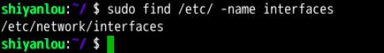
注意 find 命令的路径是作为第一个参数的， 基本命令格式为 find [path][option] [action] 。
与时间相关的命令参数：
| 参数 | 说明 |
|---|---|
-atime | 最后访问时间 |
-ctime | 最后修改文件内容的时间 |
-mtime | 最后修改文件属性的时间 |
下面以 -mtime 参数举例：
-mtime n：n 为数字，表示为在 n 天之前的“一天之内”修改过的文件-mtime +n：列出在 n 天之前（不包含 n 天本身）被修改过的文件-mtime -n：列出在 n 天之内（包含 n 天本身）被修改过的文件-newer file：file 为一个已存在的文件，列出比 file 还要新的文件名
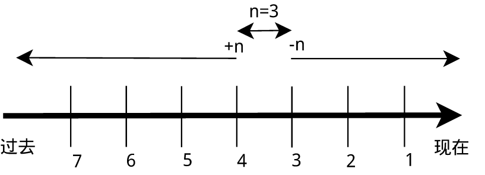
列出 home 目录中，当天（24 小时之内）有改动的文件：
find ~ -mtime 0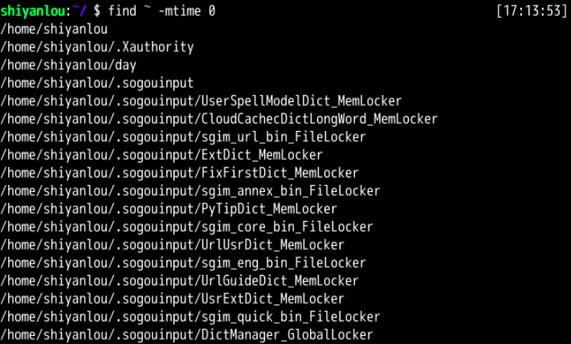
列出用户家目录下比 /etc 目录新的文件：
find ~ -newer /etc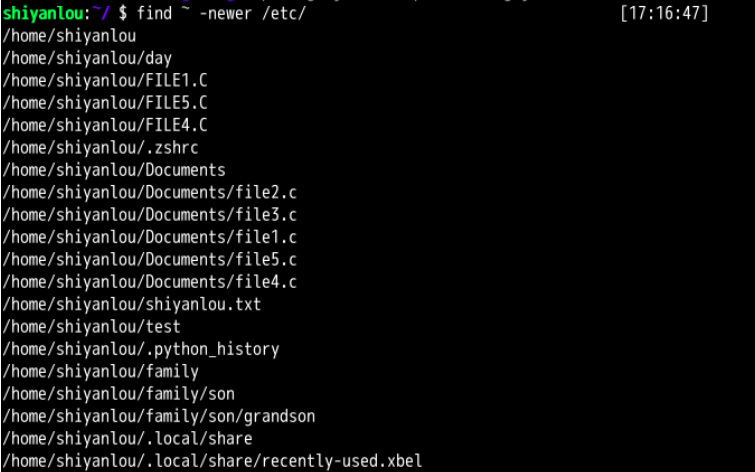